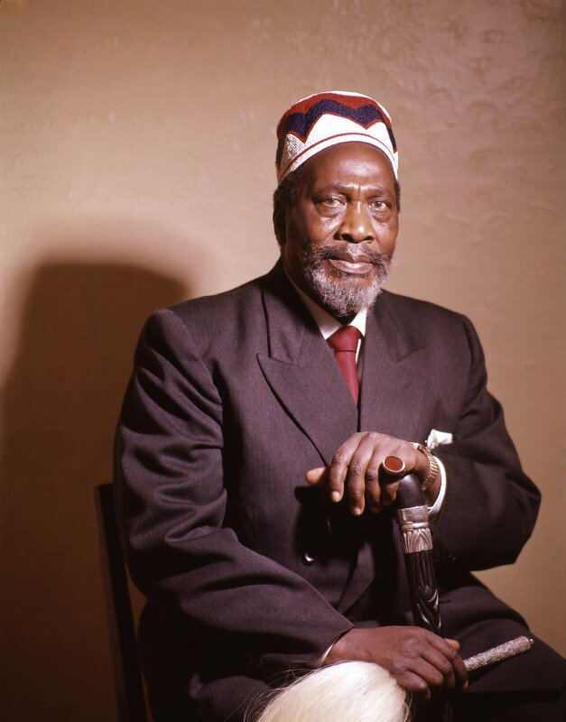
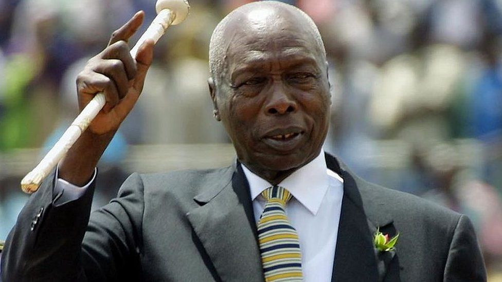
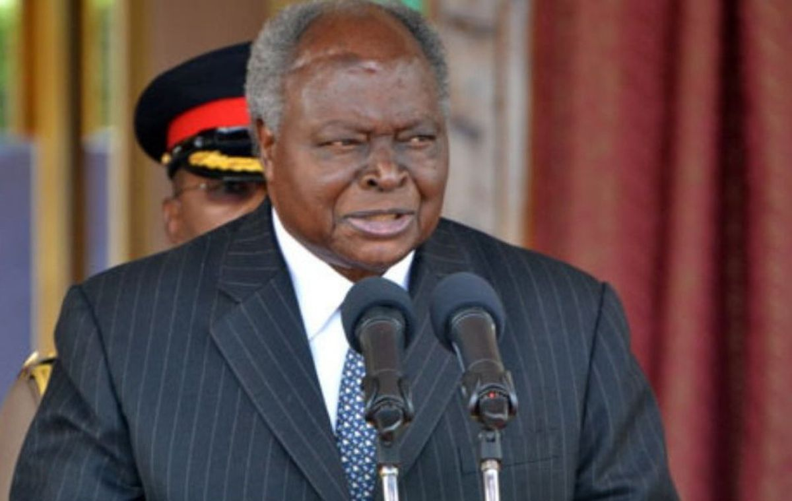
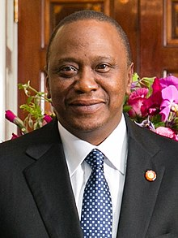

Below is a short educative article about the republic of Kenya.
Kenya has mainly been inhabited by 3 major language groups,namely;
Kenya became a British protectorate in 1895 and was called British East Africa Protectorate.It was not until 1920 when Kenya became a British colony that it was named Kenya.Some communities in Kenya such as the Nandi and the Mijikenda resisted the British.Some communities such as the Wanga collaborated while other such as the Maasai had mixed reactions towards the British.Kenya eventually got its independamce in 1963.This was after a hard struggle mainly from the Mau Mau resistance.Kenya became a republic the following year in 1964.
Kenya has had 4 presidents from 1963 to date.
The first president who is the founding father of the nation was Jomo Kenyatta.
He served from 1963 to when he died in 1978.He identified 3 major challenges in Kenya which we worked to eradicate.This were ignorance,poverty and diseases.
The second president was Daniel Toroitich Arap Moi who ascended to presidency following the death of Jomo Kenyatta.
He is the longest serving president after he served for 24years.Moi followed the footsteps of the founding father,Nyayo.He died in 2020 aged 95years.
The third president was Mwai Kibaki.
Ascended to predency after winning in the 2002 election.It is during his reign that Kenya experienced major economic developments.He served for 10 years after which he retired from politics.
The fourth and current president is Uhuru Muigai Kenyatta. 
He is the son of Kenya's first president.He was elected in 2013 and will complete hi 2nd term in August 2022.